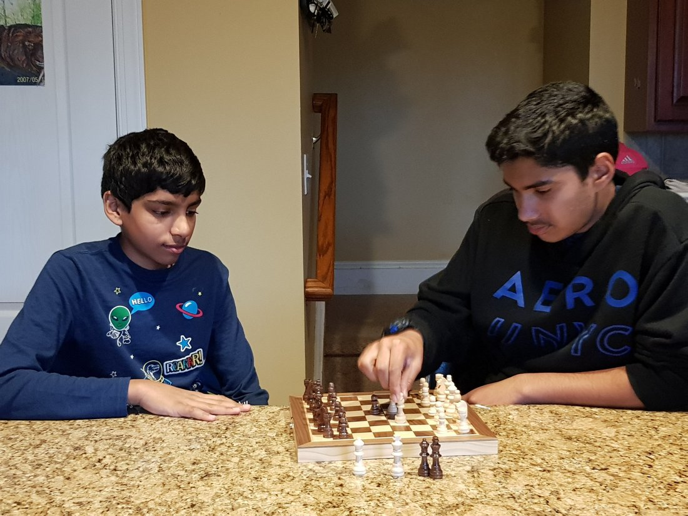
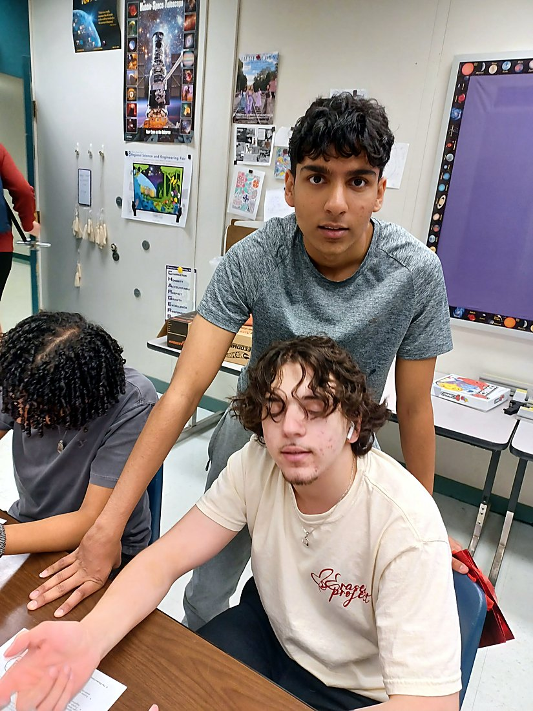
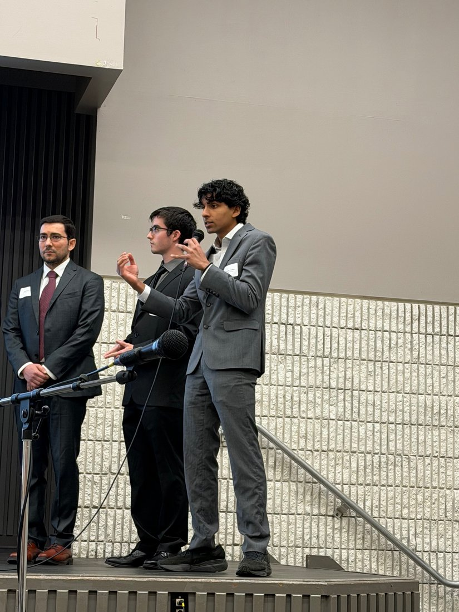

The short version of how I got here
I’ve always been drawn to numbers and the stories they tell. As a kid, I built “inventions” and took on hard problems. I would spend hours on them, and I didn’t stop until I’d solved them, however long it took.
I was born in Boston, Massachusetts. When I was five, my mom decided it was time to go back to her roots, so we moved to India. From 1st through 10th grade, I went to one of the most academically demanding schools in the country, where I built a strong foundation in math, science, English, and social studies. Outside the classroom, I played in an Indian classical music band, did robotics, and joined a chess club.

In 2021, I moved back to the U.S. and started at Chantilly High School, where I joined advanced percussion and the wrestling team. Around then, my problem solving took a new direction. I got less interested in how things work and more interested in how people work: what drives them, and what makes them say yes. That curiosity, along with a strong drive to build something of my own, led me to study business at George Mason University.

Each role I’ve held pulled me into a new part of business. An accounting internship in India introduced me to accounting. Making sandwiches at Potbelly and selling for Vector Marketing taught me marketing and sales. A finance internship at ECDC brought me into finance. Becoming a Data and Operations Intern led me to business analytics. My titles and majors have changed, but my approach hasn’t. I find a hard problem, stay with it, and work it out. That’s how I worked as a kid building inventions, and it’s how I’ll keep working.
